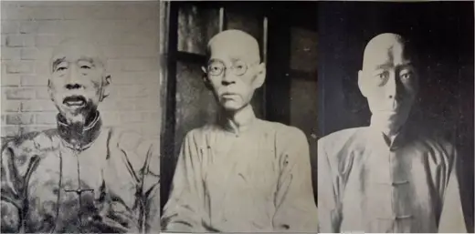

중국 근대 ‘공민(公民)’과 조소: 기념 및 선전조각을 중심으로
访问原网页 ↗Visit original website ↗

S070 · 이보연（李寶妍 / Boyoun Yi） · 2020，《미술사논단》51，183–216
第197页图9重刊1933年润例中三件上海人物肖像模型，图注依次标朱葆三、張逸雲、陳桑馥。第198页图10并置南京孙中山像及基座模型。Figure 9 on p. 197 identifies three Shanghai portrait models from Teng’s 1933 price catalogue. Figure 10 on p. 198 pairs the Nanjing statue and base models. The original price catalogue remains to be checked.
馆藏图像与原文Archived images and documents
- 朱葆三、張逸雲、陳桑馥肖像模型三联图Portrait models of Zhu Baosan, Zhang Yiyun and Chen Sangfu I050
- 南京新街口孙中山造像与基座模型，比较图版Nanjing statue and base models, comparative plate I052
- 李寶妍论文，题名及雕塑图版选页Boyoun Yi: title and relevant sculpture pages D007


原始网址Original URL
https://doi.org/10.14380/AHF.2020.51.183